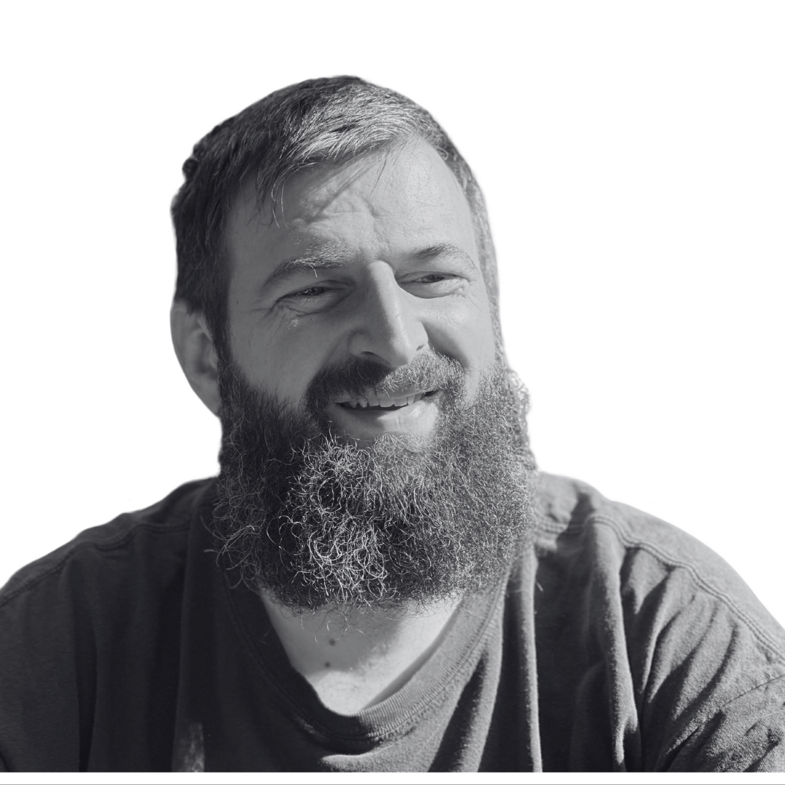
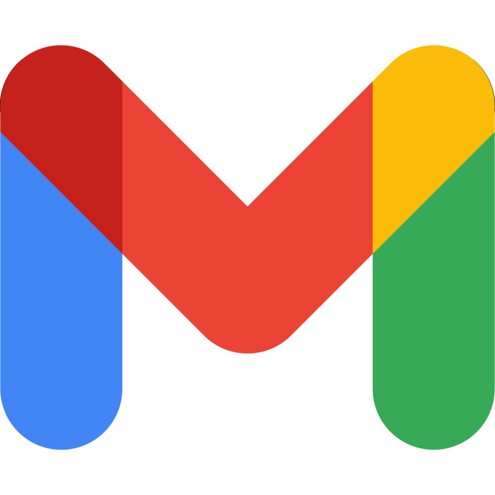

Kalman Perenyi

Summary
I am an IT professional working in Finance, but currently pivoting toward Python, Web Development and LLM / Geenrative AI programming. When I'm not an IT Professional, I'm a boardgamer and puzzle solver.
 

Skills
- Visual Basic for Applications (VBA)
- KNIME
- Python
- Full Stack Web Development
- Languages:
- English (fluent)
- Hungarian (native)
- Problem solving, Analytical Thinking
Work History
Citi Group, Budapest, 2020-2025
2020-today: Regulatory Reporting Automation and Data Transformation Senior Specialist
- As part of a bigger development team I am responsible for transforming “archaic” Excel based reporting tools into KNIME workflows.
- As a Senior Analyst I am responsible for end-to-end development, from Analysis through Design and Development, to Documentation, and UAT management.
- Key achievements:
- Designing, implementing, documenting and rolling out of a tool ("Calculation Engine") which enables the team to standardize solutions for a frequently occuring, specific type of reports, while vastly decreasing the development and maintenance efforts for these.
Diageo, Budapest, 2007-2020
2018-2020: Intercompany Developer
- Although my responsibilities were largely the same as in my previous role (see details below), I got promoted to reflect the senior nature of my role.
- Key achievements:
- Diageo launched one of its most complex technical projects to date: moving all of its servers to the cloud, including all SAP servers. IPS (Intercompany Pricing System) was heavily impacted, as it spans across three SAP systems (ECC, Fiori/Gateway and PO/BPM). As the application owner I was involved in every phase of this project.
- My last 9 months was spent with Knowledge Transfer, and developer documentation, including a business trip to Bangalore.
2015-2018: Intercompany Technical Analyst
- IPS (Intercompany Pricing System): Afer being the consultant in the vendor selection process, I lead the development and deployment project from business perspective.
- After go-live my main responsibility was maintaining the tool, improving services, and develop new requirements in the specific programming language of the tool.
- I also maintained the MS Office macro collection and provided IS related support to the wider Intercompany Team.
- Key achievements:
- Designing the above mentioned IPS (including redesigning and streamlining the Intercompany Pricing ways of working), and using it’s unique programming language to model the ICO Pricing procedures took about a year.
2012-2015: Intercompany Pricing Team Leader
- I had usual people management responsibilities: coaching, one-on-one conversations, hiring, change management, etc.
- Managing the team's BAU workload and the resources required to support projects.
- Key achievements:
- I started working on the design of a new pricing tool, which was more robust, compliant and flexible than the previous one, automating most of the manual processes.
2010-2012: Senior Intercompany Pricing Analyst
- My key responsibilities were the maintenance of the Excel and Access based internal macro collection, and to develop new tools to help the team and improve processes.
- I provided technical support for the team in general IS related issues.
- Key achievements:
- I proposed and designed workflow database to improve an outdated cross-team process. I had to travel to the Amsterdam office to gather support and sponsorship, and in the end, I developed and rolled out the tool myself. I received a “Gold Label” award for this process improvement project.
2008-2010: Intercompany Pricing Analyst
- My key responsibilities were to gather information and approval to calculate and load Intercompany Pricing to SAP, while ensuring (and driving) master data correctness
- Assist in maintaining an Excel and Access based internal macro collection.
- I had to work with tight deadlines and handle erratic workload spikes.
2007-2008: Vendor Data Controller
- My key responsibilities were to gather and enter accurate data to SAP with unusually tight deadlines, to keep KPIs at expected rate.
- Key achievements:
- As a “personal project” I developed a KPI tracking database for the team (MS Access).
2005-2007: White Lion, Bristol
2005: Royal Mail, Bristol
2004-2005: National Opera House, Budapest
Education History
2025-2025: My Udemy Journey
- Python Pro - in progress
- Full Stack Web Development - in progress
- LLM Engineering - in progress
- Generative AI - in progress
1999-2005: Eotvos Lorand University, Budapest
- 2001-2005: Computer Science and Mathematics
- 1999-2001: Physics
Miscellaneous achievements
Internal Trainer
For 2 years I have been an Internal Trainer at Diageo, holding Excel Advanced and Macro trainings, including helping create the training plan and materials.
Founder of BoardGame Nights
In 2019 I organized Diageo Board Game Night, which became a regular (monthly) social event at the company.